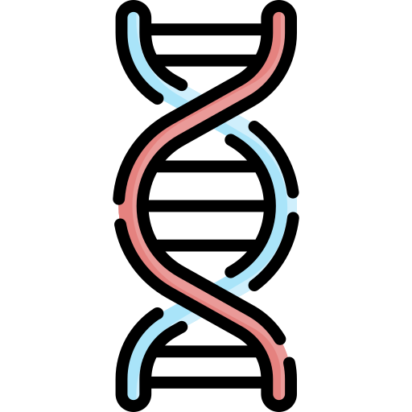
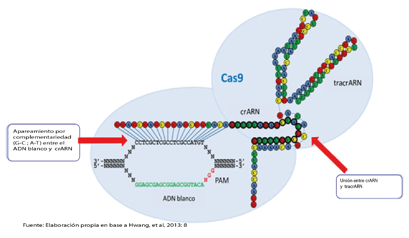
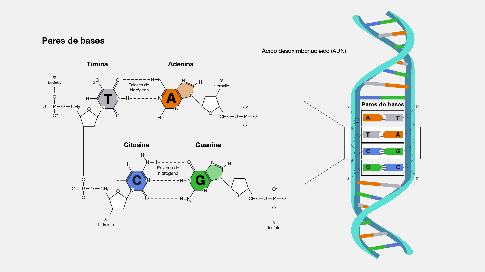
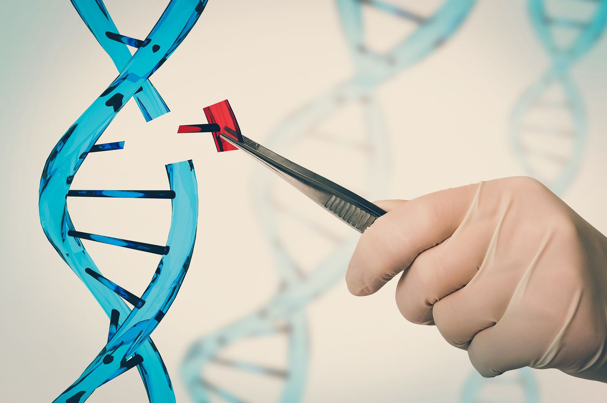
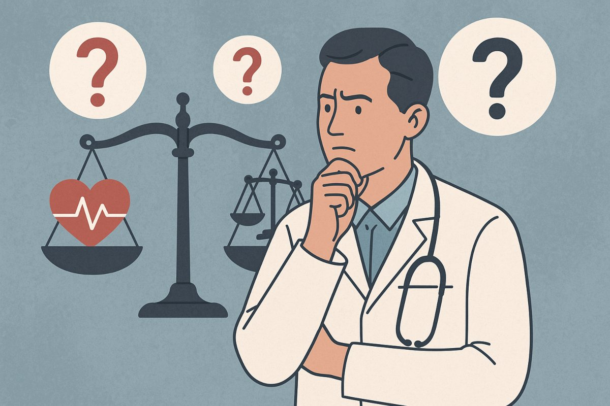
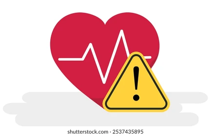

La edición genética aplicada a embriones humanos consiste en modificar el ADN de un embrión antes de su desarrollo completo. Su principal objetivo es prevenir enfermedades hereditarias causadas por mutaciones genéticas. Aunque esta tecnología ofrece importantes avances para la medicina, también genera debates éticos, legales y de seguridad debido a que los cambios realizados podrían transmitirse a futuras generaciones.

Es la herramienta más utilizada actualmente para editar genes. Funciona como unas “tijeras moleculares” capaces de localizar una secuencia específica de ADN y modificarla con gran precisión.

Permite cambiar una sola letra del ADN sin cortar completamente la cadena genética, reduciendo algunos riesgos asociados a la edición tradicional.

Es una versión más avanzada de la edición genética que permite corregir mutaciones de forma más precisa y flexible.

Permite analizar el ADN de los embriones para identificar genes defectuosos o mutaciones antes de realizar cualquier modificación.

